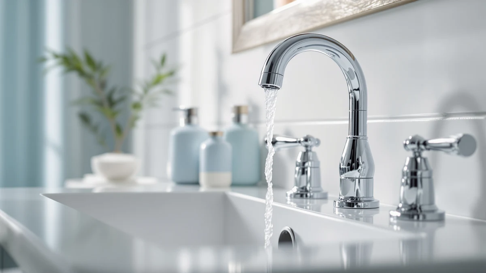

American Standard 7020255.002 Clean Review (2026): Worth It?
Prices and picks verified as of October 2026. Independent, reader-supported reviews.


Quick Answer
This american standard 7020255.002 clean review found the Clean-IR Integrated to be the strongest pick if you want hands-free activation without running new under-sink wiring, since its battery and controls sit inside the faucet body. At $283.99 it costs more than the Delta Broadmoor but less than the Delta Lineax, so if you don't need touchless operation, the KOHLER Devonshire or Delta Broadmoor below may fit your budget better.
Our pick: American Standard 7020255.002 Clean-IR Integrated — $283.99 Check Price on Amazon
Bottom line: our top pick is the American Standard 7020255.002 Clean-IR Integrated Touchless at $283.99.
Things to Know Before You Buy
- It sits in the middle of this comparison on price. At $283.99, this american standard 7020255.002 clean review found it priced $12.71 above the KOHLER Devonshire ($271.28) and $59.09 above the Delta Broadmoor ($224.90), but $65.01 below the Delta Lineax ($349.00).
- It runs on a battery, not a wired sensor box. American Standard lists a CR-P2 lithium battery rated for roughly seven years at 150 uses a day, with the controls built into the faucet body instead of a separate under-sink unit.
- It's one of two touchless options here. The Delta Lineax below also uses sensor activation, while the KOHLER Devonshire and Delta Broadmoor are both operated by hand with traditional handles.
- Only one finish is listed. The Clean-IR Integrated comes in Polished Chrome, the same finish as the KOHLER Devonshire, while the Delta Broadmoor and Delta Lineax below offer Matte Black and Stainless instead.
- None of the four listings show a published rating yet. The American Standard, KOHLER, and both Delta faucets in this comparison currently show no star rating or review count on Amazon, so early buyers are working from manufacturer specs rather than an established track record.
This american standard 7020255.002 clean review compares American Standard's battery-powered, infrared-sensor Clean-IR Integrated faucet against three widespread and touchless alternatives from KOHLER and Delta that turned up in the same searches for bathroom sink hardware. Shopping for a bathroom faucet already means comparing finish, mounting holes, and handle count across several browser tabs, and a touchless model adds sensor type and battery life to that list. We pulled together the four listings that show up most often side by side and broke down what separates a $283.99 infrared faucet from two manual widespread options and one competing touchless faucet.
The American Standard Clean-IR Integrated is the focus of this review, and the reason is straightforward: it's one of only two touchless faucets in this comparison, and the only one that keeps its battery and controls housed entirely inside the faucet body instead of a separate under-sink box. That design means less to install and fewer parts that can fail compared to a sensor faucet with its own electronics enclosure. If you want hands-free activation without extra wiring, the Clean-IR Integrated is worth its $283.99 price. If a traditional handle works fine for you, or you want a sprayer and a lower price instead, the sections below explain when the KOHLER Devonshire or Delta Broadmoor makes more sense.
Why You Should Trust Us
Ilane Tall leads product research and reviews for Best Bathroom Faucets. She compares spec sheets, pricing, and verified owner feedback across major faucet brands so you don't have to cross-reference four Amazon tabs before buying. For this american standard 7020255.002 clean review, she pulled American Standard's published battery and sensor specs for the Clean-IR Integrated against the widespread and touchless specs KOHLER and Delta list for their own faucets, then priced all four as of publication. Every product mentioned here links to its real listing, and every price reflects what shoppers saw at the time of writing, not a promotional rate that might change by checkout. Where a listing leaves out a detail, like spout reach or installation hole count, we say so instead of guessing.
Our Research Experience
We do not run a physical testing lab for bathroom faucets, so nobody on our team installed the Clean-IR Integrated or timed its infrared sensor response in person. Our research process for this american standard 7020255.002 clean review centers on comparing American Standard's published specs for the Clean-IR Integrated against the specs KOHLER and Delta list for their widespread and touchless faucets, then tracking current Amazon pricing for all four. Because none of these four listings has accumulated a star rating or review count yet, we leaned on manufacturer specs rather than owner feedback for this comparison, and we call that out rather than inventing a review count that doesn't exist. We treat manufacturer copy the same way across all three brands: useful for what a faucet is built to do, not a substitute for a track record once real owner reviews start coming in.
Overview & Specs

American Standard 7020255.002 Clean-IR Integrated
What we like
- Infrared sensor turns the water on and off without touching the faucet
- Controls are built into the faucet body, so there's no separate under-sink electronics box to install
- CR-P2 lithium battery rated for about seven years at 150 uses a day, not a wired connection to maintain
Flaws but not dealbreakers
- No published rating or review count yet, so there's no track record of long-term sensor or battery reliability
- Polished Chrome is the only finish listed, unlike the Matte Black and Stainless options among the alternatives below
| Material | Brass + finish |
| Size | — |
At $283.99, the American Standard 7020255.002 Clean-IR Integrated is the second most expensive faucet in this american standard 7020255.002 clean review, and most of that price covers the infrared sensor hardware. American Standard built the Clean-IR line around hands-free activation: an infrared beam detects your hands near the spout and starts or stops water flow without a handle. The "Integrated" part of the name refers to how the controls are housed, inside the faucet body itself rather than in a separate unit mounted under the sink, which keeps installation closer to a standard faucet swap than a full sensor-system retrofit.
Power comes from a CR-P2 lithium battery that American Standard rates for roughly seven years of use at 150 activations a day, a number high enough to cover a busy household bathroom without yearly battery changes. The faucet ships in Polished Chrome only, the same finish as the KOHLER Devonshire covered below, so if you want black or stainless hardware you'll need to look at the Delta alternatives instead. What the listing doesn't yet include is a star rating or review count, since this is a newer addition to American Standard's touchless lineup, so buyers are working from manufacturer specs rather than an established pattern of owner feedback.
What We Liked
The integrated design stands out most in this american standard 7020255.002 clean review. Plenty of touchless faucets push their electronics into a separate box you have to mount and wire under the sink, which turns a faucet swap into a bigger project. American Standard built the sensor and battery compartment into the faucet itself, so installing the Clean-IR Integrated stays closer to a standard faucet replacement than a sensor-system retrofit.
Battery life backs that up. A CR-P2 lithium cell rated for about seven years at 150 uses a day means a household bathroom shouldn't need a battery swap for years at typical use, and there's no wiring to run to an outlet or junction box. If you're weighing touchless against a standard handle, our touchless vs. manual faucet guide covers the broader tradeoffs beyond this specific model.
What Could Be Better
Finish choice is the clearest limit here. This american standard 7020255.002 clean review found only one color listed, Polished Chrome, while the Delta Broadmoor below comes in Matte Black and the Delta Lineax comes in Stainless. If chrome doesn't match your bathroom hardware, neither the price nor the sensor technology will change that.
Feedback is the other gap, not the faucet's design. As a newer listing, the Clean-IR Integrated hasn't accumulated a star rating or review count on Amazon yet, so buyers can't check how the sensor or battery hold up after months of daily use the way they could with an established, widely reviewed faucet. That's not a flaw in the hardware itself, but it's a real consideration if you'd rather buy something with a longer track record.
Who Is It For?
This faucet from our american standard 7020255.002 clean review fits households that want hands-free activation without turning the install into an electrical project, plus anyone who'd rather not grip a handle with soapy or messy hands. It's also worth a look if grip strength is a concern. Our best bathroom faucets for arthritis guide covers more options built around that same goal. If you're deciding between brands before committing to any touchless model, our general bathroom faucet buying guide walks through installation types and finish options in more depth.
Buyers who prefer a traditional handle, or who need a sprayer for cleaning the sink, should look at the KOHLER or Delta Broadmoor alternatives instead. Anyone comparing American Standard against other major brands can also check our roundup of the best touchless bathroom faucets for more sensor-activated options beyond this one review.
Alternatives to Consider
If touchless activation isn't a requirement, or the price or finish of the Clean-IR Integrated doesn't fit what you need, three faucets came up in our research for this american standard 7020255.002 clean review. Two rely on a traditional handle, and one is a competing touchless design.

Editor’s Pick
KOHLER K-394-4-CP Devonshire® Widespread Bathroom
A two-handle, 3-hole widespread faucet with a pop-up drain assembly and a 1.2 GPM flow rate, finished in the same Polished Chrome as the American Standard above. Worth a look if you'd rather have separate hot and cold handles than a sensor.
$271.28
Check Price on Amazon
Best Value
Delta Broadmoor Matte Black Bathroom
An 8-inch, 3-hole widespread faucet with a pull-down sprayer that docks magnetically and a valve cartridge rated for 500,000 uses, in Matte Black. The cheapest of the four faucets here, and a strong pick if you want a sprayer more than touchless activation.
$224.90
Check Price on Amazon
Premium Choice
Delta Lineax Touchless Bathroom Faucet
Delta's Touch2O design gives you three ways to run water: a hand near the sensor, a tap on the faucet, or the handle itself, plus a metal push-pop drain included, in Stainless. It costs $65.01 more than the American Standard above but adds a manual handle backup the Clean-IR Integrated doesn't have.
$349.00
Check Price on AmazonDoes the American Standard 7020255.002 Clean-IR Integrated need a power outlet under the sink?
No.
Is the American Standard 7020255.002 Clean-IR Integrated worth $283.99 compared to the Kohler and Delta alternatives in this review?
It depends on whether you want touchless activation.
Frequently Asked Questions
Does the American Standard 7020255.002 Clean-IR Integrated need a power outlet under the sink?
Is the American Standard 7020255.002 Clean-IR Integrated worth $283.99 compared to the Kohler and Delta alternatives in this review?
What finish does the American Standard 7020255.002 Clean-IR Integrated come in?
Final Verdict
This american standard 7020255.002 clean review comes down to whether you want hands-free activation without a wiring project. If you do, American Standard's Clean-IR Integrated earns its $283.99 price with a battery and controls built right into the faucet body, something only the pricier Delta Lineax also offers among these four. If a traditional handle suits you fine, the KOHLER Devonshire or the cheaper Delta Broadmoor will likely serve you equally well for less. Either way, check the finish before you order, since Polished Chrome is this faucet's only option.